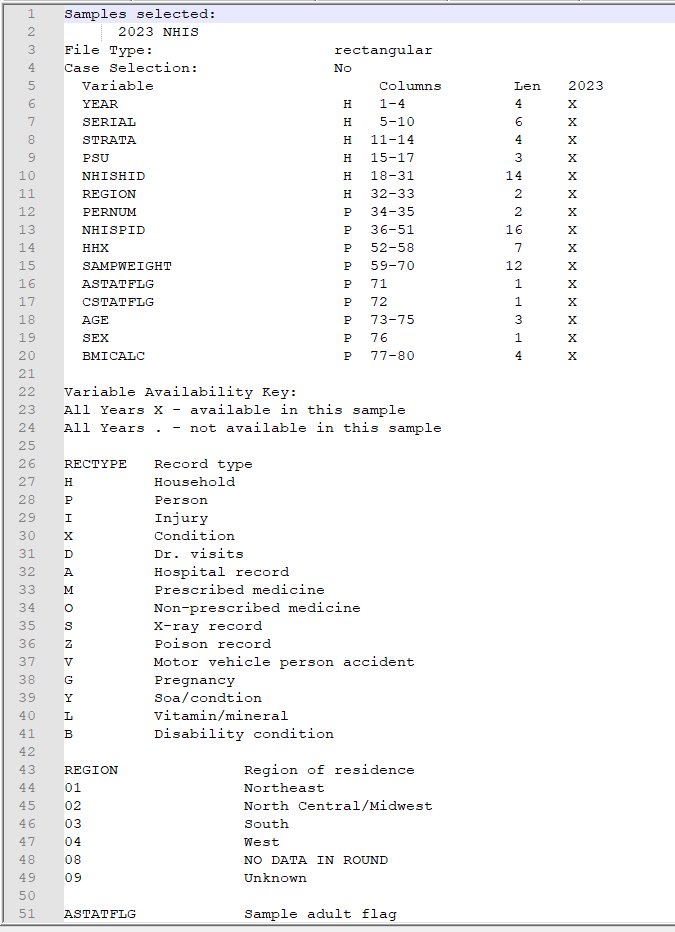

Census Data
Misc
- Notes from
- Packages
- {tidycensus} - Allows users to easily interface with a select number of the US Census Bureau’s data APIs and return tidyverse-ready data frames, optionally with simple feature geometry included
- Dicennial US Census and ACS
- Also Population Estimates API and Migration Flows API (See Other Datasets Vignette)
- {censusapi} - Access all Census APIs
- {lehdr} - Allows users to interface with Origin-Destination Employment Statistics (LODES) dataset returned as dataframes.
- LODES data is part of the LEHD survey (See below)
- {pewmethods} (Intro)
- Steps for creating basic survey weights, as well as display weighted estimates of categorical variables, not to mention the various cleaning, recoding, combining and collapsing tasks in between
- Streamlines data transformation, weighting, & country-level summaries for international data (article)
- Complements the survey package as well as the tidyverse
- {RcensusPkg} - Provide easy access to the US Census Bureau’s datasets and collection of TIGER/Line Shapefiles providing plot geometries for states, counties, roads, landmarks, water, enumeration tracts/blocks for the entire United States.
- {tidycensus} - Allows users to easily interface with a select number of the US Census Bureau’s data APIs and return tidyverse-ready data frames, optionally with simple feature geometry included
- Resources
- Analyzing Census Data: Methods, Maps, and Models in R by Kyle Walker
- State Issues
- Alaska
- Often redraws county-equivalent areas between Dicennial censuses, so it’s difficult to perform time series analysis.
- Connecticut
- Changed from having 9 counties to having 8 “Planning Regions†in 2022.
- This affects census tracts as well
- Virginia
- Has counties but also independent cities which are county equivalent
- e.g. Arlington is county but Alexandria is an independent city
- Missouri
- St.Louis is an independent city (county equivalent) but surrounded by St.Louis county
- South Dakota
- Shannon County changed its name to Oglala Lakota County between the 2010 and 2020 Dicennial censuses. Each name will have its own GEOID.
- Alaska
- For details on joining census data to other data, see Chapter 7.2 in Analyzing Census Data
- FIPS GEOID
- Census Geocoder (link)
- Enter an address and codes for various geographies are returned
- Batch geocoding available for up to 10K records
- Codes for geographies returned in a .csv file
- TIGERweb (link)
- Allows you to get geography codes by searching for an area on a map
- Once zoomed-in on your desired area, you turn on geography layers to find the geography code for your area.
- US Census Regions
.png)
Other Surveys
- All of Us Research Program - One of the largest biomedical data resources of its kind. The All of Us Research Hub stores health data from participants from across the United States.
- Linked to the ACS at the 3-digit ZIP code level
- Packages
- {AOUSDOHtools} - Functions for processing and analyzing survey data from the All of Us Social Determinants of Health (AOUSDOH) program, including tools for calculating health and well-being scores, recoding variables, and simplifying survey data analysis.
- American Housing Survey (AHS)
- Zillow also publishes a bunch of housing data (See Real Estate >> Features)
- Current Population Survey (CPS) - From 1962 to the present. Data include demographic information, rich employment data, program participation and supplemental data on topics such as fertility, tobacco use, volunteer activities, voter registration, computer and internet use, food security, and more.
- Alternative to the ACS for getting nationally representative demographic data.
- Census Bureau’s faq on the differences
- Notably, the ACS only surveys households, and it uses a shorter 8-question survey, while the CPS tries to reach the entire civilian noninstitutionalized population and uses a longer, more detailed survey.
- A monthly survey of ≈100,000 US individuals. A more comprehensive annual version—the Annual Social and Economic Supplement (ASEC)—is published every March.
- Heiss article on comparing your survey data estimates to CPS population estimates
- Alternative to the ACS for getting nationally representative demographic data.
- Community Resilience Estimates (CRE) - Provides an easily understood metric for how socially vulnerable every neighborhood in the United States is to the impacts of disasters.
- The population universe for CRE includes all individuals except those in adult correctional facilities, juvenile facilities, and college dormitories.
- Using restricted microdata from the ACS and small area modeling, the CRE creates population estimates based on ten individual/household level components of social vulnerability, including: poverty status, number of caregivers in the households, unit-level crowding, communication barrier, employment, disability status, health insurance coverage, age (65+), vehicle access, and broadband internet access.
- Zero components is considered “low social vulnerability,†one or two components is considered “moderate social vulnerability,†and three or more components is considered “high social vulnerability.”
- Margins of error and statistical tests are estimated with 90 percent confidence
- Dataset might include hazard risk variables (i.e., expected annual losses ratings) from FEMA’s National Risk Index (NRI) (Docs).
- Access
- Dowload from the site
- {RcensusPkg}
- Demographic and Health Surveys (DHS) - The program has collected, analyzed, and disseminated accurate and representative data on population, health, HIV, and nutrition through more than 400 surveys in over 90 countries
- Packages
- {DHSr} - Mapping, spatial analysis, and statistical modeling of microdata from sources such as DHS and IPUMS (Integrated Public Use Microdata Series)
- Supports spatial correlation index construction and visualization, along with empirical Bayes approximation of regression coefficients in a multistage setup
- Create large scale repeated regression statistics
- e.g. Run regression for n groups, the group ID should be vertically composed into the variable for the parameter ‘location_var’.
- glms, logit, probit, and more.
- {DHSr} - Mapping, spatial analysis, and statistical modeling of microdata from sources such as DHS and IPUMS (Integrated Public Use Microdata Series)
- Packages
- General Social Survey (GSS)
- Conducted since 1972. Contains a standard core of demographic, behavioral, and attitudinal questions, plus topics of special interest. Among the topics covered are civil liberties, crime and violence, intergroup tolerance, morality, national spending priorities, psychological well-being, social mobility, and stress and traumatic events.
- Packages
- {gssr} - Convenient interface that provides access to GSS data
- {gssrdoc} - Companion package to {gssr}
- Provides documentation for all GSS variables in the cumulative data file via R’s help system.
- Browse variables by name in the package’s help file or type ? followed by the name of the variable at the console to get a standard R help page containing information on the variable, the values it takes and (in most cases) a crosstabulation of the variable’s values for each year of the GSS.
- Longitudinal Employer-Household Dynamics (LEHD) - Since 1999, the survey has explored the interactions between workers and firms. By linking employer and household data, the LEHD program has built a comprehensive database of longitudinally linked jobs data.
- Access
- Job-to-Job Flows (J2J)
- Origin-Destination Employment Statistics (LODES) (See R package)
- Workplace Area Characteristics, or WAC dataset, gives you a time-series of Census-block level jobs characteristics back to 2002 for a variety of breakouts including many 2-digit NAICS codes.
- Residence Area Characteristics (RAC) dataset gets you residential locations of workers at the block level to help you understand the labor force across different markets.
- Use Case: Understand the accessible labor pool for new industrial / office developments
- Origin-Destination (OD) dataset and analyze commuter flows within your market / region
- Use Case: Flows for commuters to the AllianceTexas industrial area in my city of Fort Worth
- Post-Secondary Employment Outcomes (PSEO)
- Quarterly Workforce Indicators (QWI)
- Veteran Employment Outcomes (VEO)
- Restricted-Use Microdata
- U.S. National Health Interview Survey (NHIS) - Monitored the health of the nation since 1957. NHIS data on a broad range of health topics are collected through personal household interviews. Survey results have been instrumental in providing data to track health status, health care access, and progress toward achieving national health objectives. (source). Uses a stratified, multistage sample design.
Geographies

Misc
- {tidycensus} docs on various geographies, function arguments, and which surveys (ACS, Census) they’re available in.
- ACS Geography Boundaries by Year (link)
- In the figure:
- Ordered from top to bottom by population size
- The green segments that connect the ancillary geographies on the outside to the primary geographies in the column indicate which primary geography that that ancillary geography is nested within without any overlap.
- School Districts fit entirely within a State, i.e. a school district can’t be in more than one state.
- The gray segments show the ancillary geographies that Census Blocks are completely nest within
- Subminor Civil Divisions are completely nested within County Subdivisions
- Core Based Statistical Area (CBSA)
- Metro Areas: Contains one principle city that has at least 50K people and it’s surrounding counties
- Micro Areas: Smaller than Metro Areas
- Public Use Microdata Areas (PUMA)
- See Walker’s book, Ch. 9.4
- Redrawn each Dicennial US Census but usually only go into affect via other surveys a couple years afterwards
- e.g. 2022 1-yr ACS was the first ACS to use 2020 PUMAs
- Typically contain 100K-200K people
- Useful when variables at the county level are sparse. By moving up to a larger geographic area, there are fewer NAs (probably none).
Types
- Legal/Administrative
- Census gets boundaries from outside party (state, county, city, etc.)
- e.g. election areas, school districts, counties, county subdivisions
- Statistical
- Census creates these boundaries
- e.g. regions, census tracts, ZCTAs, block groups, MSAs, urban areas
- Legal/Administrative
Nested Areas
.png)
- Census Tracts
- Areas within a county
- Around 1200 to 8000 people
- Small towns, rural areas, neighborhoods
- ** Census tracts may cross city boundaries **
- Block Groups
- Areas within a census tract
- Around 600 to 3000 people
- Census Blocks
- Areas within a block group
- Could be a city block in dense areas or much larger in rural areas.
- Not for ACS, only for the Dicennial (10-yr) census
- Census Tracts
Places
- Misc
- One place cannot overlap another place
- Expand and contract as population or commercial activity increases or decreases
- Must represent an organized settlement of people living in close proximity.
- Incorporated Places
- cities, towns, villages
- Updated through Boundary and Annexation Survey (BAS) yearly
- Census Designated Places (CDPs)
- Areas that can’t become Incorporated Places because of state or city regulations
- Concentrations of population, housing, commericial structures
- Updated through Boundary and Annexation Survey (BAS) yearly
- Misc
County Subdivisions
- Minor Civil Divisions (MCDs)
- Legally defined by the state or county, stable entity. May have elected government
- e.g. townships, charter townships, or districts
- Census County Divisions (CCDs)
- no population requirment
- Subcounty units with stable boundaries and recognizable names
- Minor Civil Divisions (MCDs)
Zip Code Tabulation Areas (ZCTAs)
.png)
- Misc
- Regular zip codes are problematic — can cross state lines.
- {crosswalkZCTA} - Contains the US Census Bureau’s 2020 ZCTA to County Relationship File, as well as convenience functions to translate between States, Counties and ZIP Code Tabulation Areas (ZCTAs)
- Approximate USPS Code distribution for housing units
- The most frequently occurring zip code within an census block is assigned to a census block
- Then blocks are aggregated into areas (ZCTAs)
- ZCTAs do NOT nest within any other geographies
- I guess the aggregated ZCTA blocks can overlap block groups
- 2010 ZCTAs exclude large bodies of water and unpopulated areas
- 2020 ZCTAs that cross state lines (source, code)
- Misc
American Community Survey (ACS)
Misc
- Heiss’s notebook on accessing ACS
- Default MOE is a 90%CI
- Popular variable calculations from variables in ACS
- Also see tidycensus >> Variables
- The 2020 1-year ACS was not released (and is not in tidycensus), so your time-series can break if you are using a loop to pull data
Description
About
- Yearly estimates based on samples of the population over a 5yr period
- Therefore a Margin of Error (MoE) is included with the estimates.
- Available as 1-year estimates (for geographies of population 65,000 and greater) and 5-year estimates (for geographies down to the block group)
- 1-Year: Useful for getting the most up-to-date estimates
- Not all variables will be available even if your geography has over 65K people for confidentiality or accuracy concerns)
- Some MOEs might be larger than the estimate
- If the geography you choose has a lot of NAs, try moving up to a larger geography
Also see Geographies >> Misc
Example: From County to PUMA
tx_wfh <- get_acs( geography = "puma", variables = "DP03_0024P", state = "TX", survey = "acs1", year = 2023 )- You still get decent granularity for denser populated regions, so patterns will be visable while also getting complete coverage of a study area
- 5-Year: Useful for smaller geographies and when lower MOEs are necessary.
- 1-Year: Useful for getting the most up-to-date estimates
- Detailed social, economic, housing, and demographic characteristics. Variables covering e.g. income, education, language, housing characteristics
- Smallest geography is the Block Group
- census.gov/acs
- Yearly estimates based on samples of the population over a 5yr period
ACS Release Schedule (releases)
- September - 1-Year Estimates (from previous year’s collection)
- Estimates for areas with populations of >65K
- October - 1-Year Supplemental Estimates
- Estimates for areas with populations between 20K-64999
- December - 5-Year Estimates
- Estimates for areas including census tract and block groups
- September - 1-Year Estimates (from previous year’s collection)
Data Collected
- Population
- Social
- Ancestry, Citizenship, Citizen Voting Age Population, Disability, Education Attainment, Fertility, Grandparents, Language, Marital Status, Migration, School Enrollment, Veterans
- Demographic
- Age, Hispanic Origin, Race, Relationship, Sex
- Economic
- Class of worker, Commuting, Employment Status, Food Stamps (SNAP), Health Insurance, Hours/Week, Weeks/Year, Income, Industry & Occupation
- Social
- Housing
- Computer & Internet Use, Costs (Mortgage, Taxes, Insurance), Heating Fuel, Home Value, Occupancy, Plumbing/Kitchen Facilities, Structure, Tenure (Own/Rent), Utilities, Vehicles, Year Built/Year Movied In
- Population
Examples
Example 1: Median Household Income for Texas Counties
texas_income <- get_acs( geography = "county", variables = "B19013_001", # median household income state = "TX", year = 2022 )- Required: geography, variables
- Variable format is table_variable e.g. (B19013 is the table, 001 is the variable)
- Default is 2019-2023 5-year ACS (survey = “acs5”)
- 1-yr ACS only surveys counties with population > 65K
- Returns: GEOID, Name (e.g. county and state), variable, estimate, moe
- Default MOE is a 90%CI (i.e. estimate \(\pm\) MOE)
- table = “B19001†- Specifying this argument gets you all the variables in this table (e.g. all income variables)
- Required: geography, variables
Example 2: Census Tract for Multiple Counties in NY
nyc_income <- get_acs( geography = "tract", variables = "B19013_001", state = "NY", county = c("New York", "Kings", "Queens", "Bronx", "Richmond"), year = 2022, geometry = TRUE ) mapview(nyc_income, zcol = "estimate")-
utah_income <- get_acs( geography = "county", variables = "B19013_001", state = "UT", year = 2023 ) ggplot(utah_income, aes(x = estimate, y = reorder(NAME, estimate))) + geom_errorbar(aes(xmin = estimate - moe, xmax = estimate + moe), width = 0.5, linewidth = 0.5) + geom_point(color = "darkblue", size = 2) + scale_x_continuous(labels = scales::label_dollar()) + scale_y_discrete(labels = function(x) stringr::str_remove(x, " County, Utah")) + labs(title = "Median household income, 2019-2023 ACS", subtitle = "Counties in Utah", caption = "Data acquired with R and tidycensus. Error bars represent margin of error around estimates.", x = "ACS estimate", y = "") + theme_minimal(base_size = 12) Example 4: Multiple Races Percentages for San Diego County
san_diego_race_wide <- get_acs( geography = "tract", variables = c( Hispanic = "DP05_0073P", White = "DP05_0079P", Black = "DP05_0080P", Asian = "DP05_0082P" ), state = "CA", county = "San Diego", geometry = TRUE, output = "wide", year = 2022 ) faceted_choro <- ggplot(san_diego_race, aes(fill = estimate)) + geom_sf(color = NA) + theme_void() + scale_fill_viridis_c(option = "rocket") + facet_wrap(~variable) + labs(title = "Race / ethnicity by Census tract", subtitle = "San Diego County, California", fill = "ACS estimate (%)", caption = "2018-2022 ACS | tidycensus R package")- Allows for comparison, but for groups with less variation as compared to other groups since scaled according to all groups
- You’d want to make a separate map for the Black population in order to compare variation between counties.
- Allows for comparison, but for groups with less variation as compared to other groups since scaled according to all groups
PUMS
Misc
- ACS Public Use Microdata Series (PUMS)
- Also see
- 1-Year covers 1% of the US population
- 5-Year covers 5% of the US population
- Usage
- Allows you to do within-household analysis
- e.g. Given a certain demographic, how many kids does the average household have?
- Allows you to get single Age statistics (the regular ACS has binned ages)
- Allows you to do within-household analysis
- PUMS variables located in dataset,
pums_variables- survey: e.g. acs1
- year, data_type, value_min, value_max
- var_code: Value for variables argument
- var_label: Basic description
- val_label: Describes the measured value
- e.g. state name, dollar amounts, houses on less than an acre
- level: e.g. household-level values or person-level values
- recode: logical which says where you can use recode = TRUE in
get_pumswhich will add columns with the categories (original columns have numerical codes)
- Filter data at the API to reduce size of downloaded data
Example:
la_pums_filtered <- get_pums( variables = c("SEX", "AGEP", "HHT"), state = "LA", survey = "acs5", variables_filter = list( SEX = 2, AGEP = 30:49 ), year = 2023 )
- Census Bureau recommends using Succesive Difference Replication to calculate standard errors and provides 80 replicate weights (i.e. 80 extra columns) to do this. (See example)
Example 1: Louisiana
la_pums <- get_pums( variables = c("SEX", "AGEP", "HHT"), state = "LA", survey = "acs1", year = 2023 ) head(la_pums) #> # A tibble: 45,026 × 8 #> SERIALNO SPORDER WGTP PWGTP AGEP STATE HHT SEX #> <chr> <dbl> <dbl> <dbl> <dbl> <chr> <chr> <chr> #> 1 2023GQ0000080 1 0 22 35 22 b 1 #> 2 2023GQ0000129 1 0 138 58 22 b 2 #> 3 2023GQ0000171 1 0 37 19 22 b 1 #> 4 2023GQ0000183 1 0 97 22 22 b 2 #> 5 2023GQ0000200 1 0 62 19 22 b 2- SERIALNO is the serial number of the household
- GQ means “Group Quarters†so no family dwellings (e.g. senior care facility, dorm room). They get a WGPT of 0 since they aren’t consider to be a household.
- SPORDER is the “order†of a household where 1 is the “head†of the household
- Combined with SERIALNO uniquely identifies a person
- WGTP is the household weight, i.e. how many households a household represents
- PWGTP is the person weight, i.e. how many persons a record represents
- e.g. 75 means this person represents approximately 75 with similar demographic characteristics.
- AGEP is the age of the person
- HHT is the household type; Need to check out the variable information to see what the numerical codes represent. Setting recode = TRUE will add columns with the categories based on the information in
pums_variables. (Will also add a SEX column with the sex categories)
- SERIALNO is the serial number of the household
Example 2: Get the number of 41 year olds in Louisiana
# Number of 41 year-olds is 63826 la_pums |> filter(AGEP == 41) |> summarize(pop_41 = sum(PWGTP)) # total population is 4573749 sum(la_pums$PWGTP) # compare with regular ACS... matches get_acs("state", "B01003_001", state = "LA", survey = "acs1", year = 2023) #> # A tibble: 1 × 5 #> GEOID NAME variable estimate moe #> <chr> <chr> <chr> <dbl> <dbl> #> 1 22 Louisiana B01003_001 4573749 NA- Summing the weights gives you total populations which shows you that PUMS data are weighted to align with regular ACS
Example 3: Calculate MOE for Age Population Using Replicate Weights
la_pums_replicate <- get_pums( variables = c("AGEP", "PUMA"), state = "LA", survey = "acs1", year = 2023, rep_weights = "person" ) # converts df to a survey design object la_survey <- tidycensus::to_survey( la_pums_replicate, type = "person" ) library(srvyr) la_survey %>% filter(AGEP == 41) %>% survey_count() %>% mutate(n_moe = n_se * 1.645) # 90% CI #> # A tibble: 1 × 3 #> n n_se n_moe #> <dbl> <dbl> <dbl> #> 1 63826 3662. 6024.- Also see
- Surveys, Analysis >> Weights >> Types >> Replicate Weights
- Mathematics, Statistics >> Terms >> Margin of Error (MOE)
- {srvyr} automatically calculates the standard errors
- Says the number of 41 yr olds in Louisiana is 63,826 \(\pm\) 6024 with 90% confidence
- Also see
Example 4: Median Age Estimates by PUMA with MOE
library(srvyr) la_survey %>% group_by(PUMA) %>% summarize(median_age = survey_median(AGEP)) %>% mutate(median_age_moe = median_age_se * 1.645) # 90% CI #> # A tibble: 35 × 4 #> PUMA median_age median_age_se median_age_moe #> <chr> <dbl> <dbl> <dbl> #> 1 00101 39 1.76 2.89 #> 2 00102 41 1.26 2.07 #> 3 00200 40 0.502 0.826 #> 4 00300 40 0.754 1.24 #> 5 00400 36 0.502 0.826 #> 6 00500 42 1.00 1.65 #> 7 00600 36 1.00 1.65 #> 8 00700 36 0.502 0.826 #> 9 00801 40 1.00 1.65 # check calc with 1 yr ACS la_age_puma <- get_acs( geography = "puma", variables = "B01002_001", state = "LA", year = 2023, survey = "acs1" )- la_survey is a survey design object from the previous example
- {srvyr} automatically calculates the standard errors
- Calculated median ages via PUMS are not identical to regular ACS estimates, but are very close. Only use PUMS calculated statistics (larger MOEs) if they aren’t available in the regular ACS surveys.
Dicennial US Census
Misc
- Also see tidycensus >> Variables (in particular the DHC example)
- A complete count — not based on samples like the ACS
- Smallest geography is the census block
- Applies differential privacy to preserve respondent confidentiality
- Adds noise to data. Greater effect at lower levels (i.e. block level)
- The exception is that is no differetial privacy for household-level data.
- For data prior to 2000, use IPUMS NHGIS
- Other sumfile codes
- “cd118†- Population data for the 118th Congress
- “sf1†- 2010 Dicennial Census
PL94-171
Population data which the government needs for redistricting
sumfile = “pl”
State Populations
pop20 <- get_decennial( geography = "state", variables = "P1_001N", year = 2020 )- For 2020, default is sumfile = “pl”
- Using table = “P1†instead of the variable gives you all the variables in table P1
DHC
Age, Sex, Race, Ethnicity, and Housing Tenure (most popular dataset)
Hispanic is an ethnicity that contains many races
sumfile = “dhc”
County
tx_population <- get_decennial( geography = "county", variables = "P1_001N", state = "TX", sumfile = "dhc", year = 2020 )Census Block (analogous to a city block)
matagorda_blocks <- get_decennial( geography = "block", variables = "P1_001N", state = "TX", county = "Matagorda", sumfile = "dhc", year = 2020 )
Demographic Profile
Pretabulated percentages from dhc
sumfile = “dp”
- Tabulations for 118th Congress and Island Areas (i.e. Congressional Districts)
- sumfile = “cd118”
- Tabulations for 118th Congress and Island Areas (i.e. Congressional Districts)
C suffix variables are counts while P suffix variables are percentages
- 0.4 is 0.4% not 40%
Example: Same-sex married and partnered in California by County
ca_samesex <- get_decennial( geography = "county", state = "CA", variables = c(married = "DP1_0116P", partnered = "DP1_0118P"), year = 2020, sumfile = "dp", output = "wide" )- Wide format and also renames the variable columns to married and partnered
Detailed DHC-A
Detailed demographic data; Thousands of racial and ethnic groups; Tabulation by sex and age.
The DHC-B file has housing characteristics for the detailed racial and ethnic groups.
Different groups are in different tables, so specific groups can be hard to locate.
Adaptive design means the demographic group (i.e. variable) will only be available in certain areas. For privacy, data gets supressed when the area has low population.
- There’s typically considerable sparsity especially when going down census tract
Args
- sumfile = “ddhca”
- pop_group - Population group code (See
get_pop_groupsbelow)- “all†for all groups
- pop_group_label = TRUE - Adds a column for group names
get_pop_groups(2020, "ddhca")- Gets group codes for ethnic groups- For various groups there could be at least two variables (e..g Somaili, Somali and any combination)
- For time series analysis, analagous groups to 2020’s for 2000 is SF2/SF4 and for 2010 is SF2. (SF stands for Summary File)
Variables
load_variables(2020, "ddhca") %>% # or "ddhcb" for housing-level View()check_ddhca_groups- Checks which variables are available for a specific groupExample: Somali
check_ddhca_groups( geography = "county", pop_group = "1325", state = "MN", county = "Hennepin" )
Example: Minnesota group populations
mn_population_groups <- get_decennial( geography = "state", variables = "T01001_001N", # total population state = "MN", year = 2020, sumfile = "ddhca", pop_group = "all", # for all groups pop_group_label = TRUE )- Includes aggregate categories like European Alone, Other White Alone, etc., so you can’t just aggregate the value column to get the total population in Minnesota.
- So, in order to calculate ethnic group ratios of the total state or county, etc. population, you need to get those state/county totals from other tables (e.g. PL94-171)
- Includes aggregate categories like European Alone, Other White Alone, etc., so you can’t just aggregate the value column to get the total population in Minnesota.
Use dot density and not chloropleths to visualize these geographically sparse datasets
Example: Somali populations by census tract in Minneapolis

hennepin_somali <- get_decennial( geography = "tract", variables = "T01001_001N", # total population state = "MN", county = "Hennepin", year = 2020, sumfile = "ddhca", pop_group = "1325", # somali pop_group_label = TRUE, geometry = TRUE ) somali_dots <- tidycensus::as_dot_density( hennepin_somali, value = "value", # column name which is by default, "value" values_per_dot = 25 ) mapview(somali_dots, cex = 0.01, layer.name = "Somali population<br>1 dot = 25 people", col.regions = "navy", color = "navy")- values_per_dot = 25 says make each dot worth 25 units (e.g. people or housing units)
- Dots are scattered randomly within each census tract
IPUMS
- IPUMS - A University of Minnesota project that’s supported by a consortium of other institutions and companies. Provides access to many types of census and survey data through its website and API.
- Includes CPS, ACS, census microtata for 100+ countries, historical GIS shapefiles, time use surveys, and more.
- Some or maybe all surveys require registering an account and agreeing to usage constraints.
- Constraints
- You will not redistribute the data without permission
- You will use the data in these data files for statistical reporting and analysis only
- You will not use the data to identify individuals
- Cite the IPUMS data appropriately
- For information on proper citation refer to citation and use. Publications and research reports making use of IPUMS NHIS should be added to our Bibliography.
Misc
- Also see American Community Survey (ACS) >> PUMS
- Packages
- {ipumsr}
- collection = * values for currently available datasets. If you want to check if this list has changed, use
ipums_data_collections.- USA: “usa”
- CPS: “cps”
- International: “ipumsi”
- IPUMS Time Use
- ATUS: “atus”
- AHTUS: “ahtus”
- MTUS: “mtus”
- IPUMS Health Surveys
- NHIS: “nhis”
- MEPS: “meps”
- collection = * values for currently available datasets. If you want to check if this list has changed, use
- {{ipumspy}}
- {ipumsr}
- There are plenty of steps to get this data which can seem a little daunting if you haven’t dealt with this sort of process before. Some of the tasks:
- You have to set up an account where they ask who you are, what you do, and type of research for each type of survey, but it’s just information collection and isn’t determinative on whether you gain access to the data or not.
- Once you do it the first time, they’re nice enough to fill out the fields for you when you want to get data from another survey.
- There can be oodles of variables to choose from.
- Finding the exact design information needed to perform analyses.
- Some of the interfaces are slightly different but the main surveys are very similar.
- Need to get an API key, of course, to be able to use packages
- For R, it should stored in your
.Renvironfile and under IPUMS_API_KEY
- For R, it should stored in your
- You have to set up an account where they ask who you are, what you do, and type of research for each type of survey, but it’s just information collection and isn’t determinative on whether you gain access to the data or not.
- Available datasets through the API
- Coded Value that represents “NIU†mean “Not in Universe”
- Example: For the variable BMICALC, the Universe for survey years 2021 and 2023: Sample adults age 18+. Therefore NIU means the person isn’t an adult and therefore didn’t have their BMI calculated.
Design Information
You need to know information about the study design so that your variance estimates will be correct. This information will be inputs for the study design object if you’re using {survey} or {srvyr}.
- What is the sampling unit id variable (e.g. primary sampling unit)
- Is there stratification? If so, what is the stratification id variable?
- Is there clustering? If so, what is the cluster id variable
- And have the cluster ids been nested inside the stratification id variable?
- Have the weights been included or do they need to be calculated?
tl;dr
For the NHIS at least, the easiest way to figure out the inputs for your study design object is to look in the Variance Estimation guide where lo and behold, they just give it to you!
library(survey) library(srvyr) data <- as_survey_design(data, id = PSU, weight = PERWEIGHT, strata = STRATA, nest = TRUE) summarize(data, var1_mean = survey_mean(var1, na.rm = TRUE))
Other methods to find these variables/parameters (in case other surveys aren’t so nice)
Luckily the weights, stratification, and clustering variable should be automatically included in the dataset (See Getting the Data>> Example: NHIS via Website >> 6. Review and ID Variables)
- Our variables are SAMPWEIGHT, STRATA, and PSU. If you check out the description of STRATA and PSU, it says they’re what we require to handle stratification and clustering in our analysis.
Explore User Guide
There’s a lot of interesting information on the User Guide page, but to answer the nesting question, we can go to the Sample Design user note.
After searching for the word “nest,†I find a paragraph that says, “The current sample design selects clusters of households and non-institutional group quarters (such as college dormitories) that are nested within primary sampling units (PSUs). A PSU can consist of a county, a small group of adjacent counties, or a metropolitan statistical area.”
After searching for the word “strata,†I find this paragraph that says, “[After creating PSUs] The second step involves, for some states, dividing the PSUs into two strata defined by population density, generally urban and rural counties. All other states contain only one stratum. The third step involves defining clusters of approximately 2,500 addresses within each stratum, where each address cluster is located entirely within one of the originally defined 1,689 PSUs. Fourth, a specific number of address clusters in each stratum is systematically selected for the NHIS sample.”
- So households clusters are nested within population-density-defined Strata which are nested within clusters/PSU (groups of counties).
The documentation for nest = TRUE in a study design object is “relabel cluster ids to enforce nesting within strata,†and the definition for the ids argument is “variables specifying cluster ids from largest level to smallest level”
- It’s confusing to me, because in this example, PSUs are used as cluster ids. So, the study design object is specified to say (from my understanding) that PSUs are nested inside the Strata which is opposite of what is happening.
- I guess the key is from “largest level to smallest level†and since we have multiple levels of clustering, the PSU variable makes sense. It is what it is, but I think it could be worded better.
Getting the Data
The workflow is essentially: Select variables \(\rightarrow\) Select Years \(\rightarrow\) Select Data Format \(\rightarrow\) Download
Example 1: NHIS via Website
I’m using this data to follow along with a tutorial. See Surveys, Analysis >> {srvyr}.
Choose a Survey
- There are two IPUMS Health Surveys
- I’m selecting National Health Interview Series
Homepage
- There are two ways to get to the survey variables interface
Search for Variables
The navbar shows various methods for selecting variables. I know what variables I’m after, so I’m just using the A-Z index. As the figure shows, there are many variables to choose from which can be overwhelming.
Actually Search would’ve been the best option as I could type the variables directly in and add them.
Browsing by Category
Read Variable Details
- Clicking on the name of the variable sends you to its details page
- Honestly everything here is potentially useful for your analysis.
- Codes: Gives you the coded variable values
- e.g. AGE 997 values mean the person refused to give their age
- Description: Gives information such as how a variable is calculated or how it’s description has been changed over the years (e.g. more categories added)
- e.g. BMICALC: “[Weight in pounds/(Height in inches, squared)] multiplied by 703 and rounded to one digit past the implied decimal point.”
- Comparabilty: Tells you if you’re comparing apples to apples if you compare a variable across different years of the survey.
- e.g REGION: Comparable prior to 2019 when there was a redesign
- Universe: Tells you what the demographics of the people that are sampled for this variable
- e.g. BMICALC:
- 2020 2022: Sample children ages 10-17 and sample adults age 18+.
- 2021; 2023: Sample adults age 18+
- e.g. BMICALC:
- Availability: Says which survey years contain this variable
- Survey Text: Gives the exact text of the survey question
- e.g. SEX has experienced many changes in how the question was asked and the responses available.
- Weights: Gives the name of the weights variable depending the on the survey year and links to that weights variables details page.
- e.g. 1963-2018 : PERWEIGHT; 2019-2023 : SAMPWEIGHT
- NHIS Sources: Says which version of the survey was used to obtain the variable
- e.g. SEX
- 2023 - In both sample adult and child questionnaires
- 2018 - Person (core questionnaire) ## 4. Select Variables and Years
- e.g. SEX
- Codes: Gives you the coded variable values
Select Variables
- Here I’m selecting AGE by clicking on the green plus. Also notice that SERIAL has been preselected. So the your dataset comes with some default variables
- Proceed to select all the variables that you want.
Select Years
- Once you selected all your variables, you click the Select Samples button.
- Or if you check your Cart first, it’ll tell you to Select Samples.
- Then, select the years that you want.
- Make sure you have checked each of your selected variable’s availability prior
Review Variables
- After selecting your samples (i.e. years) and you submit them, it takes you to your Cart where you look over your variables.
- Then click Create Data Extract
Preselected Variables
- Currently it seems like PSU, STRATA, and maybe SERIAL are the only id variables I’m interested in.
- A closer look at the ID variables:
- PSU - Primary Sampling Unit that represents the impact of the sample design clustering on the estimates of variance and standard errors.
- Researchers need to use PSU in conjunction with STRATA to account for stratification and clustering when computing variance estimates with IPUMS NHIS data.
- 3-digit numeric variable
- STRATA - Represents the impact of the sample design stratification on the estimates of variance and standard errors
- Generally (not completely) comparable for 1985 forward but may be affected by changes in the 2019. Says they’re working on a way to make it comparable prior to 1985.
- Not exactly sure what “generally†actually means, but it also says, after 2019, “there is no longer a sampling weight to produce household population estimates.”
- Might have to do with them switching from sampling everyone in the household to sampling 1 adult and 1 child.
- 5-digit numeric variable
- 000 indicates not in Universe
- Universe:
- 1963-2018: All households.
- 2019-2023: Sample adults age 18+ and sample children age 0-17.
- Generally (not completely) comparable for 1985 forward but may be affected by changes in the 2019. Says they’re working on a way to make it comparable prior to 1985.
- SERIAL - A unique id to each household in a given survey year. The combination of YEAR and SERIAL provides a unique identifier for every household in the IPUMS NHIS database.
- NHISHID - A unique id to each household in a given survey year. Used to link IPUMS NHIS data with additional household-level data elements, from the NHIS source public use data files, that are not currently available in IPUMS.
- So not currently a useful variable
- If and when the public use data files become available, there is a guide for using these variables to merge data in the User Guide. The link to the User Guide is in left side panel of the NHIS homepate (See Design Information for a pic)
- NHISPID - Same as NHISHID but for persons
- So not currently a useful variable (See NHISHID)
- PERNUM - Either a 1 or a 2. Variable that numbers all persons within each family (prior to 2019) or within each household consecutively (starting with “1”) in the order in which they appear in the original NHIS data.
- A sample adult and sample child from each household are interviewed instead of collecting detailed information on all members of the household, so there is a maximum of two people per household as reported in PERNUM beginning in 2019.
- Since a 1 or 2 isn’t consistent with an adult or a child, I’m not sure how useful this is.
- HHX - For sample adults and sample children, HHX reports the person’s household number on the original NHIS data. HHX is unique within sample but only unique across samples when combined with information on year.
- HHX is unique within sample.
- Beginning in 2019, HHX leads with the character “H†followed by six numeric digits. Prior to 2019, HHX consisted only of six numeric digits.
- In the NHISPID, Comparability section, it says that HHX is a component of the 16-digit NHISPID value. So this variable is used for linking person-level data to household-level information.
- Since NHISPID isn’t currently useful, neither is this one.
- PSU - Primary Sampling Unit that represents the impact of the sample design clustering on the estimates of variance and standard errors.
Decide on File Format and Create Extract
- The main thing here is the file format. The default is “Fixed-width text (.dat)†data format, whatever that is. I changed it to .csv.
- You can also change it to a Hierarchical structure. Not sure what that is about though (maybe JSON?).
Download Data and Codebook
- Click to download the data
- There’s a Basic and DDI — I’d get them both.
- “Basic†is just a text file, and even though it has a .cbk extension, notebook++ read it just fine
- Some basic information from variable details page, e.g. List of Variables, Availability, Codes, etc.
- The .xml DDI file contains more information. Almost as much as the Variable details webpage. See Example 2 >> Explore DDI
- “DDI†stands for the Data Documentation Initiative (DDI) which is a standard for documenting social science datasets. It’s an XML file so it’s machine readable (e.g. {ipumsr})
Example 2: NHIS via {ipumsr}
API key should be in your
.Renvirontl;dr See the Download and Read Data tab for the entire piped workflow
Find the collection name of the NHIS survey
ipums_data_collections() #> # A tibble: 14 × 4 #> collection_name collection_type code_for_api api_support #> <chr> <chr> <chr> <lgl> #> 1 IPUMS USA microdata usa TRUE #> 2 IPUMS CPS microdata cps TRUE #> 3 IPUMS International microdata ipumsi TRUE #> 4 IPUMS NHGIS aggregate data nhgis TRUE #> 5 IPUMS IHGIS aggregate data ihgis FALSE #> 6 IPUMS ATUS microdata atus TRUE #> 7 IPUMS AHTUS microdata ahtus TRUE #> 8 IPUMS MTUS microdata mtus TRUE #> 9 IPUMS DHS microdata dhs FALSE #> 10 IPUMS PMA microdata pma FALSE #> 11 IPUMS MICS microdata mics FALSE #> 12 IPUMS NHIS microdata nhis TRUE #> 13 IPUMS MEPS microdata meps TRUE #> 14 IPUMS Higher Ed microdata highered FALSE- Looking for the NHIS survey, so nhis is what I want
Get the sample (aka survey year) names for the NHIS survey
tail(get_sample_info("nhis")) #> # A tibble: 6 × 2 #> name description #> <chr> <chr> #> 1 ih2018 2018 NHIS #> 2 ih2019 2019 NHIS #> 3 ih2020 2020 NHIS #> 4 ih2021 2021 NHIS #> 5 ih2022 2022 NHIS #> 6 ih2023 2023 NHIS- I’m just pulling the 2023 survey, so I need ih2023
Define Extract
def_extract_nhis <- define_extract_micro( collection = "nhis", description = "2023 NHIS via API", # whatever you want samples = "ih2023", variables = c("SEX", "AGE", "REGION", "BMICALC"), data_format = "csv" ) def_extract_nhis #> Unsubmitted IPUMS NHIS extract #> Description: 2023 NHIS via API #> #> Samples: (1 total) ih2023 #> Variables: (4 total) SEX, AGE, REGION, BMICALC- There’s currently not programmatical way to search for variables. So you’ll have to do that via the website. See Example 1.
- All the inputs are subsettable from the extract definition, e.g.
names(usa_extract_definition$variables)
Submit Request
sub_extract_nhis <- submit_extract(def_extract_nhis) #> Successfully submitted IPUMS NHIS extract number 2 sub_extract_nhis$status #> [1] "queued" names(sub_extract_nhis$variables) #> [1] "YEAR" "SERIAL" "STRATA" "PSU" "NHISHID" "REGION" "PERNUM" "NHISPID" "HHX" #> [10] "SAMPWEIGHT" "ASTATFLG" "CSTATFLG" "AGE" "SEX" "BMICALC" status_sub_nhis <- wait_for_extract(sub_extract_nhis) #> Checking extract status... #> IPUMS NHIS extract 2 is ready to download.- The extract won’t be downloadable immediately. They’ll notify you via email or you can check via function.
- The output can be subset if your script is noninteractive, e.g.
status_sub_nhis$statuswhich will say “completed†when ready. Other possible values: “queued”, “started”, “produced”, “canceled”, and “failed”. - There’s also
is_extract_readythat returns a logical
- The output can be subset if your script is noninteractive, e.g.
- Your variable list has been updated by the API to include all the preselected variables (ID variables and YEAR). See Example 1 for a description of the ID variables.
- ASTATFLG and CSTATFLG indicate whether the person is an Adult or Child (1 each is sampled per household in this survey design)
Download and Read Data
path_ext_nhis <- download_extract( extract = sub_extract_nhis, download_dir = "../../Data/ipums/", lower_vars = TRUE ) dat_nhis <- read_ipums_micro(path_sub_nhis)“For microdata extracts, only the file path to the downloaded .xml DDI file will be returned, as it is sufficient for reading the data provided in the associated .dat.gz data file.”
- See Example 1 for an explanation of the DDI file.
The data file name is
nhis_00002_csv.gz. Since you can download previously requested extracts (e.g.download_extract("nhis:1")for the first nhis requested extract), I’m thinking the 2 in the file name refers to the fact that this is my second NHIS request.
Piped Workflow
dat_nhis <- define_extract_micro( collection = "nhis", description = "2023 NHIS via API", # whatever you want samples = "ih2023", variables = c("SEX", "AGE", "REGION", "BMICALC"), data_format = "csv" ) |> submit_extract() |> wait_for_extract() |> download_extract( download_dir = "../../Data/ipums/", lower_vars = TRUE ) |> read_ipums_micro()Search History
Your extract history can be checked with
get_extract_historywhich retrieves prior extracts, their survey years, and their variables.That history can be used to search for past extracts that contain certain variables:
purrr::keep(extracts_past_nhis, ~ "BMICALC" %in% names(.x$variables))
Read a Variable Description
writeLines(ipums_var_desc(ddi_nhis, var = "BMICALC"))Variable Information
info_vars_nhis <- ipums_var_info(ddi_nhis, vars = c("AGE", "REGION")) dplyr::glimpse(info_vars_nhis) #> Rows: 2 #> Columns: 10 #> $ var_name <chr> "REGION", "AGE" #> $ var_label <chr> "Region of residence", "Age" #> $ var_desc <chr> "REGION reports the region of the U.S. where the housing unit containing survey participants was located… #> $ val_labels <list> [<tbl_df[6 x 2]>], [<tbl_df[6 x 2]>] #> $ code_instr <chr> NA, "AGE is a 3-digit-numeric variable.\n\n085:\tTop code for 85 years or older (1963-1968 and 1997-forw… #> $ start <dbl> 32, 73 #> $ end <dbl> 33, 75 #> $ imp_decim <dbl> 0, 0 #> $ var_type <chr> "integer", "numeric" #> $ rectypes <lgl> NA, NA- Contains all variable information in a tibble
- e.g. The variable description extracted using the helper function in the previous section can be extracted from the tibble.
- The value labels seem to be the different categories and codes. There’s also a separate Codes column
- Not sure what the rest of the columns are (e.g. start and end)
tidycensus
Misc
Cache shapefiles to speed-up pulling data from the API
options(tigris_use_cache = TRUE)Get an API key
- Request a key, then activate the key from the link in your email.(https://api.census.gov/data/key_signup.html)
- Required for hitting the census API over 500 times per day which isn’t as hard as you’d think.
- Set as an environment variable:
census_api_key("<api key>", install = TRUE)- Or add this line to .Renviron file, CENSUS_API_KEY=‘<api key’
- Request a key, then activate the key from the link in your email.(https://api.census.gov/data/key_signup.html)
Other Functions
county_laea- County geometry with Alaska and Hawaii shifted and re-scaledfips_codes- Dataset with FIPS codes for US states and countiesinterpolate_pw- Use population-weighted areal interpolation to transfer information from one set of shapes to anothermoe_sum,moe_prop,moe_ratio, andmoe_product- Formulas to calculate margins of error for derived estimates. (See the vignette)state_laea- State geometry with Alaska and Hawaii shifted and re-scaledto_survey- Convert a data frame returned byget_pumsto a survey object
Variables
Misc
Variable prefixes mean different things for different surveys
- e.g. P5 in the PL94-171 survey is population for group quarters and P5 in DHC is population for Hispanics or Latinos
Search Variables
Code:
vars <- load_variables(2022, "acs5")Subtables (e.g. ACS)
- Beware: variables in the Data Profile and Subject Tables can change names over time
"acs5"for the Detailed Tables;"acs5/profile"for the Data Profile; aggregated statistics for acs5- p (suffix): Percentage with appropriate denominator
- e.g. Educational Attainment: Percentage of the population 25yrs or older with at least a bachelor’s degree.
"acs5/subject"for the Subject Tables"acs5/cprofile"for the Comparison Profile- Has aggregated statistics to compare between survey years
- Only available down to the county level
- Beware of boundary changes when making comparisons (See Misc >> State Issues)
Contains:
- name: variable id, value for variables argument
- label: type of estimate (e.g total) and fine details (e.g. males 30 to 34 yrs)
- concept: general category information (e.g. sex by age)
- geography: smallest geography e.g. block group
- Geographies only shown for 5-year ACS
Top variables in a table (e.g. _001, 002) are typically the overall group estimates
- Example: something_002 with concept “Sex by Age†is the total of all Males regardless of age group. something_001 might just be the Total which would be all males and females regardless of age group
Prefixes (Variables can have combinations of prefixes)
- P: i.e. Person; Data available at the census block and larger
- CT: Data available at the census track and larger
- H: Data available at the Housing Unit level
I think housing unit is an alternatve unit. So instead of the unit being a person, which I assume is the typical unit, it’s a housing unit (~family).
Not affected by Differential Privacy (i.e. no noise added; true value)
Example: Total Deleware housing units at census block level
dp_households <- get_decennial( geography = "block", variables = "H1_001N", state = "DE", sumfile = "dhc", year = 2020 )
Example: DHC data in census for 2020
vars <- load_variables(2020, "dhc") View(vars)View(vars)allows you to filter by column (click Filter button) or the whole table (search box)- Workflow: Use search box to filter for general concept (e.g. income). Then use column filter to get specific
- Letter Codes in Names
- H is housing level data (available down to census block level)
- HCT is housing level data only available at census tract and above geographies
- P is person level data
- PCT is similar to HCT
summary_var - Argument for supplying an additional variable that you need to calculate some kind of summary statistic
Typically this variable will be the denominator in the statistic calculation for normalization purposes, e.g. comparing demogrpahic percentages between a large county and a small county.
Variables are usually overall totals at the top of a table but there can be multiple options
e.g. If you want percentages of races with non-hispanics, your summary variable would be the total of non-hispanics
e.g. if you wanted percentages of hispanics and non hispances, your summary variable would be the overall total population of that table
Example: Race Percentage per Congressional District
race_vars <- c( Hispanic = "P5_010N", # all races identified as hispanic White = "P5_003N", # white not hispanic Black = "P5_004N", # black not hispanic Native = "P5_005N", # native american not hispanic Asian = "P5_006N", # asian not hispanic HIPI = "P5_007N" # hawaiian, islander not hispanic ) cd_race <- get_decennial( geography = "congressional district", variables = race_vars, summary_var = "P5_001N", # total population for county year = 2020, sumfile = "cd118" ) cd_race_percent <- cd_race %>% mutate(percent = 100 * (value / summary_value)) %>% select(NAME, variable, percent)
Migrations Flows
Only available for 2020 and later, 5-yr ACS
This map type is also good for mapping commuting patterns
Example: Migrations from to Fulton County, GA
pacman::p_load( tidyverse, tidycensus, sf, rdeck ) Sys.getenv("MAPBOX_ACCESS_TOKEN") fulton_inflow <- get_flows( geography = "county", state = "GA", county = "Fulton", geometry = TRUE, year = 2020 ) %>% filter(variable == "MOVEDIN") %>% na.omit() fulton_top_origins <- fulton_inflow %>% slice_max(estimate, n = 30) fulton_top_origins$centroid1 <- st_transform(fulton_top_origins$centroid1, 4326) fulton_top_origins$centroid2 <- st_transform(fulton_top_origins$centroid2, 4326)- Only getting the top 30 origins in terms of people that have migrated to Fulton County
- centroid1 is the center of Fulton County which is the destination and centroid2 is the origin
flow_map <- rdeck( map_style = mapbox_light(), initial_view_state = view_state(center = c(-98.422, 38.606), zoom = 3, pitch = 45) ) %>% add_arc_layer( get_source_position = centroid2, get_target_position = centroid1, data = as_tibble(fulton_top_origins), get_source_color = "#274f8f", get_target_color = "#274f8f", get_height = 1, get_width = scale_linear(estimate, range = 1:5), great_circle = TRUE )- center = c(-98.422, 38.606) is the center of CONUS
- Width of lines is scaled to counts by get_width
- Holding
ctrl + left-flickallows you to change the pitch and bearing of the view
Mapping
Misc
- For examples with {tmap}, see Chapter 6.3 of Analyzing US Census Data
- {rdeck} and {mapgl} are performant for visualizing large amounts of data
- Use geometry = TRUE for any of the
get_*{tidycensus} functions, and it’ll join the shapefile with the census data. Returns a SF (Simple Features) dataframe for mapping. - If you only want the shape files without the demographic data, see {tigris
- Comparisons
{mapview} along with some other packages gives you some tools for comparing maps (useful for eda or exploratory reports, etc.) (m1 and m2 are mapview objects)
m1 + m2- Creates layers that allows you click the layers button and cycle through multiple maps. So I assume you could compare more than two maps here.m1 | m2- Creates swipe map (need {leaflet.extras2}). There will be a vertical slider that you can interactively slide horizontally to gradually expose one map or the other.sync(m1, m2)- Uses {leafsync} to create side by side maps. Zooming and cursor movement are synced on both maps.
{mapgl} has
compare(m1, m2)which adds a vertical slider to compare both maps
- Zoom-Level Range: 0 (zoomed-out) to 22 (zoomed-in)
- Center of the Continental US has the coordinates:
c(-98.5795, 39.8283)- More North or South: Adjust the 39
- More East or West: Adjust the -98
- In {mapgl}, use client-side styling, query, and filter functions to get significant performance boosts.
Shapefiles
- Misc
- Packages
- {tigris} - Allows users to directly download and use TIGER/Line shapefiles
- Returns feature geometries for US Census data which default to the coordinate reference system NAD 1983 (EPSG: 4269).
- Default year of 2022, though later years are available
- Maintains consistency with the most recent 5-year American Community Survey
- {arcgislayers} - R interface to the ArcGIS REST API.
- {tigris} - Allows users to directly download and use TIGER/Line shapefiles
- Packages
- {tigris}
Census API has been having issues lately. If you can’t get the shapefiles, try installing the development version. Walker usually posts patches when this happens.
pak::pak("walkerke/tigris")Example: Block Groups from the 2023 ACS 5-Year
shap_ac5 <- tigris::block_groups( county = c("Jefferson", "Oldham", "Shelby", "Spencer", "Bullitt"), state = "KY", year = 2023 )
- TIGERweb
Example: Census Tracts for Cook County, IL and the 2023 ACS
Go TIGERweb and find survey, year, and geography

- Walker says he likes TIGERweb Generalized REST Services because of the tight boundaries around the coastlines
Choose the Appropriate Resolution
- 500K (1:500,000 scale) – Higher resolution, more detail. Suitable for regional and local analysis.
- 1 inch on a 500K map = 500,000 inches in the real world (~7.89 miles)
- 5M (1:5,000,000 scale) – Medium resolution, moderate generalization. Best for state-level mapping.
- 20M (1:20,000,000 scale) – Lower resolution, highly generalized. Good for national or large-scale mapping.
Copy URL
- After clicking the resolution link, copy the URL of the webpage it takes you to.
Pull shapefiles
library(arcgislayers) cook_geo <- arc_read("https://tigerweb.geo.census.gov/arcgis/rest/services/Generalized_ACS2023/Tracts_Blocks/MapServer/4", where = "COUNTY = '031' AND STATE = '17'") head(cook_geo) #> Simple feature collection with 1331 features and 17 fields #> Geometry type: POLYGON #> Dimension: XY #> Bounding box: xmin: -9825464 ymin: 5081873 xmax: -9743145 ymax: 5184116 #> Projected CRS: WGS 84 / Pseudo-Mercator #> First 10 features: #> MTFCC OID GEOID STATE COUNTY TRACT BASENAME #> 1 G5020 207903704492010 17031030101 17 031 030101 301.01 #> 2 G5020 207903704492021 17031030701 17 031 030701 307.01 #> 3 G5020 207903704492051 17031070103 17 031 070103 701.03 #> 4 G5020 20790197959947 17031807100 17 031 807100 8071 #> 5 G5020 20790197959946 17031807200 17 031 807200 8072Paste URL and enter COUNTY and STATE FIPS code components
If you look in the tidycensus data, the state and county FIPS components will be the first five digits of the GEOID column
For a group of geographies (e.g. counties):
where = "STATE = '36' AND COUNTY IN ('005', '047', '061', '081', '085')"
Join with tidycensus Data
cook_education_geo <- cook_geo %>% select(GEOID) %>% left_join(cook_education, by = "GEOID")- Only the GEOID column is kept, but since this is a sf class dataset, I think the geometry comes along automatically.
Preprocessing
Remove water from geographies
nyc_income_tiger <- get_acs( geography = "tract", variables = "B19013_001", state = "NY", county = c("New York", "Kings", "Queens", "Bronx", "Richmond"), year = 2022, cb = FALSE, geometry = TRUE ) library(tigris) library(sf) sf_use_s2(FALSE) nyc_erase <- erase_water( nyc_income_tiger, area_threshold = 0.5, year = 2022 ) mapview(nyc_erase, zcol = "estimate")- Figures
- At the center-bottom, you can see how a sharp point is exposed where it was squared off before
- At the top-left, the point along the border which are piers/docks are now exposed.
- At the upper-middle, extraneous boundary lines have been removed and islands in the waterway are more clearly visible.
- Works only with regular tigris shapefiles from the US census bureau — so not OpenStreetMaps, etc. For other shapefiles, you’d need to do the manual overlay, see Chapter 7.1 in Analyzing US Census Data for details.
- Can take a couple minutes to run
- cb = FALSE says get the regular tigris line files which avoid sliver polygons which are caused by slight misalignment of layers (?)
- area_threshold = 0.5 says that water areas below the 50th percentile in terms of size are removed. Probably a value you’ll have to play around with.
- Figures

Workflows
Example: Automate Making 100 Maps
Show the geographic patterns in remote work for the 100 largest counties by population in US
pacman::p_load( tidyverse, mapview, tidycensus ) top100counties <- get_acs( geography = "county", variables = "B01003_001", # total county population year = 2022, survey = "acs1" ) |> slice_max(estimate, n = 100)- MOE is NA means this is true value
- Using ACS 1-Year because we want the most recent data
wfh_tract_list <- top100counties %>% split(~NAME) |> # splits tibble into a list by county map(function(county) { # extract first 2 chars (state) state_fips <- str_sub(string = county$GEOID, start = 1, end = 2) # extract next 3 chars (county) county_fips <- str_sub(string = county$GEOID, start = 3, end = 5) get_acs( geography = "tract", variables = "DP03_0024P", # remote work state = state_fips, county = county_fips, year = 2022, geometry = TRUE ) })- tidycensus also a
fips_codesdataset - This hits the API a 100 times.
Choropleths
Best for continuous data like rates and percentages, but you can use for discrete variables
- You can create a discrete color palette with the at argument in the
mapviewfunction.Example
# check min and max of your data to select range of bins min(iowa_over_65, na.rm = TRUE) # 0 max(iowa_over_65, na.rm = TRUE) # 38.4 m1 <- mapview( iowa_over_65, zcol = "value", layer.name = "% age 65 and up<br>Census tracts in Iowa", col.regions = inferno(100, direction = -1), at = c(0, 10, 20, 30, 40) )- This will result in a discrete palette with bins of 0-10, 10-20, etc. Looks like an overlap, so I’m sure which bin contains the endpoints.
- You can create a discrete color palette with the at argument in the
Issues
Notes from Data Visualization: A practical introduction, Ch.7 (Healy)
Administrative areas vary widely in geographical area and they also vary widely in population size, so most choropleth maps of the U.S. for whatever variable in effect show population density more than anything else.
The states of New Hampshire, Rhode Island, Massachussetts, and Connecticut are all smaller in area than any of the ten largest Western counties. Many of those counties have fewer than a hundred thousand people living in them. Some have fewer than ten thousand inhabitants.
Much county- state- and national data is not properly spatial, insofar as it is really about individuals (or some other unit of interest) rather than the geographical distribution of those units per se.
Beware of using per capita standardization when the event of interest is not very common, and there is very wide variation in the base size of the units, then the denominator (e.g., the population size) starts to be expressed more and more in the standardized measure.
If there are fewer than ten events per year for a cause of death, the Centers for Disease Control (CDC) will not report them at the county level because it might be possible to identify particular deceased individuals. The count will be coded as “suppressed†and therefore any rates calculated will be unreliable.
e.g. 12 deaths in a small population might well put a sparsely-populated county in the highest (darkest) category of suicide rate. Meanwhile, a low-population counties just under that threshold would be coded as being in the lowest (lightest) bin.
If estimates for these counties cannot be obtained directly or estimated with a good model, then it is better to drop those cases as missing
Example: {mapview} Over 65 in Iowa by census tract

library(mapviw); library(viridisLite) iowa_over_65 <- get_decennial( geography = "tract", variables = "DP1_0024P", state = "IA", geometry = TRUE, sumfile = "dp", year = 2020 ) m1 <- mapview( iowa_over_65, zcol = "value", layer.name = "% age 65 and up<br>Census tracts in Iowa", col.regions = inferno(100, direction = -1)){mapview} is interactive and great for exploration of data
Export as an HTML file
htmlwidgets::saveWidget(m1@map, "iowa_over_65.html")- Can embed it elsewhere (html report or website) by adding it as an asset
- For {mapgl}, you just use the name of the object and don’t need the
@syntax
Example: {ggplot}
texas_income_sf <- get_acs( geography = "county", variables = "B19013_001", state = "TX", year = 2022, geometry = TRUE ) plot(texas_income_sf['estimate'])Example: {mapgl} Continuous Choropleth

maricopa_age <- get_acs( geography = "tract", variables = "B01002_001", state = "AZ", county = "Maricopa", geometry = TRUE, year = 2023 ) summary(maricopa_age$estimate) #> Min. 1st Qu. Median Mean 3rd Qu. Max. NA's #> 4.00 31.80 36.70 39.26 42.80 76.80 14 maplibre(bounds = maricopa_age) |> add_fill_layer( id = "age", source = maricopa_age, fill_color = interpolate( column = "estimate", # median age per county values = c(4, 77), stops = c("lightblue", "darkblue"), na_color = "lightgrey" ), fill_opacity = 0.7 )interpolateused for continuous choropleth maps- id = “age†is just a name you’re giving the layer.
- values supplies a range of values to interpolate between. In this case, it’s the floor and ceiling of the min and max of the estimate column
- stops are the end points of your color gradient
Example: {mapgl} Classed Choropleth

library(viridisLite) colors <- viridis(5) maplibre( bounds = maricopa_age ) |> add_fill_layer( id = "maricopa", source = maricopa_age, fill_color = step_expr( column = "estimate", base = colors[1], stops = colors[2:5], values = c(25, 40, 55, 70), na_color = "lightgrey" ), fill_opacity = 0.6 ) |> add_legend( "Median age", values = c( "Under 25", "25 to 40", "40 to 55", "55 to 70", "70 and up" ), colors = colors, type = "categorical" ) |> fill_opacity = 0.6, tooltip = "estimate", hover_options = list( fill_opacity = 1, fill_color = "red" )- “id = maricopa†is just a name you decided to give this layer
step_expris used for discrete valuesvaluesare the left-side values of your bins, I think (e.g. 0-24, 25-39, etc.)- Basing this on his language “under 25†which I wouldn’t think includes 25. Similarly with “70 and up†which should include the left side value. Nothing in the docs that clarifies this.
baseis the color of the values in the first bin- stops are the colors for the rest of the bins
Circle Maps
“Graduated Symbol†maps are better for count data. Even though using a choropleth is not as bad at the census tract level since all tracts have around 4000 people, the sizes of the tracts can be substantially different which can influence the interpretation. Using circles or bubbles, etc. focuses the user on the size of the symbol and less on the size of the geography polygons.
Example: Hispanic Counts in San Diego County at the Census Tract Level
san_diego_race_counts <- get_acs( geography = "tract", variables = c( Hispanic = "DP05_0073", White = "DP05_0079", Black = "DP05_0080", Asian = "DP05_0082" ), state = "CA", county = "San Diego", geometry = TRUE, year = 2022 ) san_diego_hispanic <- filter( san_diego_race_counts, variable == "Hispanic" ) centroids <- st_centroid(san_diego_hispanic)st_centroidfinds the center point of geography polygons which will be the location of the symbols. If you look at the geometry column it will say POINT, which only has a latitude and longitude, instead of POLYGON, which as multiple coordiates.
ggplot() + geom_sf( data = san_diego_hispanic, color = "black", fill = "lightgrey") + geom_sf( data = centroids, aes(size = estimate), alpha = 0.7, color = "navy") + theme_void() + labs( title = "Hispanic population by Census tract", subtitle = "2018-2022 ACS, San Diego County, California", size = "ACS estimate") + scale_size_area(max_size = 6)scale_size_areascales the size of the circle according to the count value.- max_size is the maximum diameter of the circle which you’ll want to adjust to be large enough so that you can differentiate the circles but small enough so you have the least amount of overlap between circles in neighboring geographies (although this is probably inevitable).
Example: {mapgl}
maplibre( style = carto_style("positron"), bounds = centroids # guess centroid obj still has bound box attr ) |> add_circle_layer( id = "circles", source = centroids, circle_radius = step_expr( column = "estimate", values = c(500, 1000, 1500, 2500), base = 2, stops = c(4, 6, 8, 10), ), circle_opacity = 0.6, circle_color = "navy", tooltip = "estimate" ) |> add_legend( "Hispanic population", values = c( "Under 500", "500-1000", "1000-1500", "1500-2500", "2500 and up" ), sizes = c(2, 4, 6, 8, 10), colors = "navy", type = "categorical", circular_patches = TRUE, position = "top-right" )- “id = circles†is just a name you decided to give this layer
step_expris used for discrete (ordered) valuesvaluesare the left-side values of your bins, I think (e.g. 0-499, 500-999, etc.)- Basing this on his language “under 500†which I wouldn’t think includes 500. Similarly with 500 and up which also should include the left-side. Nothing in the docs that clarifies this.
baseis the circle size of the values in the first bin- stops are the circle size for the rest of the bins
- circular_patches = TRUE add the filled circles to the legend
Dot Density
Useful to show heterogeneity and mixing between groups versus plotting group facet maps.
Example: Population by Race in San Diego County

san_diego_race_dots <- tidycensus::as_dot_density( san_diego_race_counts, # see circle maps example for code value = "estimate", # group population values_per_dot = 200, group = "variable" # races ) dot_density_map <- ggplot() + annotation_map_tile(type = "cartolight", zoom = 9) + geom_sf( data = san_diego_race_dots, aes(color = variable), size = 0.01) + scale_color_brewer(palette = "Set1") + guides(color = guide_legend(override.aes = list(size = 3))) + theme_void() + labs( color = "Race / ethnicity", caption = "2018-2022 ACS | 1 dot = approximately 200 people")as_dot_densityscatters the dots randomly within a geography. values_per_dotsays each dot is 200 units (e.g. people or households). Without shuffling, ggplot will layer each group’s dots on top of each other.annotation_map_tilefrom {ggspatial} applies a base map layer as a reference for the user. Base maps have land marks and popular features labeled in the geography and surrounding areas to help the user identify the area being shown.- Dots are randomly placed within the geography (so you could end up with dots in water)
Example: {mapgl}
library(RColorBrewer) groups <- unique(san_diego_race_dots$variable) colors <- brewer.pal(length(groups), "Set1") maplibre( style = carto_style("positron"), bounds = san_diego_race_dots ) |> add_circle_layer( id = "dots", source = san_diego_race_dots, circle_color = match_expr( column = "variable", # race category values = groups, stops = colors ), circle_radius = interpolate( property = "zoom", values = c(9, 14), stops = c(1, 10) ), before_id = "watername_ocean" ) |> add_legend( "Race/ethnicity in San Diego<br>1 dot = 200 people", values = groups, colors = colors, circular_patches = TRUE, type = "categorical" )- Map is the same as the ggplot one above
match_expris for categorical values. It matches categories to colorsinterpolateis used in this instance to dynamically change the size of the dot according the current zoom-level on the map.- The closer the user zooms into an area, the larger the dots become. Just a feature to make the visualization easier to interpret.
- Guessing values is the range of zoom levels and stops is the range of dot sizes
- circular_patches = TRUE add the colored dots to the legend
Circle Clustering
Notes from Circle clusters and heatmaps for dense point data in R
Points within a given radius of one another are packed into clusters, and those clusters are visualized instead of the individual circles.
- Clusters will dynamically change depending on the user’s zoom level, revealing individual points when a max zoom level is reached.
Example: Public intoxication violations in Fort Worth, Texas
library(mapgl) library(tidyverse) library(sf) library(tigris) options(tigris_use_cache = TRUE) intox <- read_csv("https://raw.githubusercontent.com/walkerke/geog30323/refs/heads/master/intoxication.csv") |> na.omit() |> st_as_sf(coords = c("longitude", "latitude"), crs = 4326) |> st_jitter(factor = 0.0001) ft_worth <- places(cb = TRUE, year = 2023) |> filter(NAME == "Fort Worth") maplibre( style = maptiler_style("openstreetmap"), bounds = ft_worth ) |> add_fill_layer( id = "city", source = ft_worth, fill_color = "navy", fill_opacity = 0.2 ) |> add_circle_layer( id = "circles", source = intox, circle_color = "red", circle_stroke_color = "white", circle_stroke_width = 1, cluster_options = cluster_options() )In
cluster_options, you can specify a smaller cluster radius (specified in pixels) within which circles will be included in a clustercluster_options = cluster_options( cluster_radius = 30, color_stops = c("#377eb8", "#4daf4a", "#984ea3"), count_stops = c(0, 200, 500) )- You can also specify styling properties like the stroke width, blur, etc.

Heatmaps
Notes from Circle clusters and heatmaps for dense point data in R
Example 1: Public intoxication violations in Fort Worth, Texas

Zoom-In 
Zoom-Out library(mapgl) library(tidyverse) library(sf) library(tigris) options(tigris_use_cache = TRUE) intox <- read_csv("https://raw.githubusercontent.com/walkerke/geog30323/refs/heads/master/intoxication.csv") |> na.omit() |> st_as_sf(coords = c("longitude", "latitude"), crs = 4326) |> st_jitter(factor = 0.0001) ft_worth <- places(cb = TRUE, year = 2023) |> filter(NAME == "Fort Worth") maplibre( style = maptiler_style("openstreetmap"), bounds = ft_worth ) |> add_fill_layer( id = "city", source = ft_worth, fill_color = "navy", fill_opacity = 0.2 ) |> add_heatmap_layer( id = "heatmap", source = intox, heatmap_radius = 10, heatmap_color = interpolate( property = "heatmap-density", values = seq(0, 1, 0.2), stops = c("transparent", viridisLite::viridis(5)) ) )- The radius of influence get decreased to 10 from the default of 30 pixels which “breaks apart†the large blob when zoomed out.
- Density
valuesrange from 0 to 1 - Locations with values of 0 to transparent, and all other values are represented by the viridis color palette.
Example 2: With individual dots and pop-ups
library(glue) intox <- intox %>% mutate(popup_content = glue(' <div style="font-family: \'Open Sans\', sans-serif; max-width: 300px; padding: 10px; background-color: #f8f9fa; border-radius: 5px; box-shadow: 0 2px 5px rgba(0,0,0,0.1);"> <h3 style="color: #007bff; margin-top: 0;">Incident Details</h3> <p> <strong>Date:</strong> <span style="color: #495057;">{`Reported Date`}</span><br> <strong>Address:</strong> <span style="color: #495057;">{`Block Address`}</span><br> <strong>Location:</strong> <span style="color: #495057;">{`Location Description`}</span> </p> </div> ')) maplibre( style = maptiler_style("openstreetmap"), bounds = ft_worth ) |> add_fill_layer( id = "city", source = ft_worth, fill_color = "navy", fill_opacity = 0.2 ) |> add_heatmap_layer( id = "heatmap", source = intox, heatmap_radius = 10, heatmap_color = interpolate( property = "heatmap-density", values = seq(0, 1, 0.2), stops = c("transparent", viridisLite::viridis(5)) ), heatmap_opacity = interpolate( property = "zoom", values = c(11, 14), stops = c(1, 0) ) ) |> add_circle_layer( id = "circles", source = intox, circle_color = "red", circle_stroke_color = "white", circle_stroke_width = 1, min_zoom = 12.5, popup = "popup_content" )- Data from previous example

National Mapping
Issues arise from trying to include Alaska, Hawaii, Puerto Rico, etc.
Example: {mapgl} Median Home Value by State

us_value <- get_acs( geography = "state", variables = "B25077_001", year = 2023, survey = "acs1", geometry = TRUE, resolution = "5m" ) r <- range(us_value$estimate, na.rm = TRUE)- resolution = “5m†says one inch on the map equals five million inches in the real world. Good for state-level mapping.
- See tidycensus >> Misc >> Workaround >> Example for details on resolution
rangegets the min and max values to calculate the color gradient ininterpolate
# shift non-contiguous regions into CONUS window us_value_shifted <- tigris::shift_geometry(us_value) us_value_shifted$tooltip <- paste0(us_value_shifted$NAME, ": $", us_value_shifted$estimate)- Moves Alaska, Hawaii, and Puerto Rico just below CONUS
shift_geometryonly works for the US and it doesn’t work for Guam, American Samoa, and Virgin Islands.
# blank basemap style <- list( version = 8, sources = structure(list(), .Names = character(0)), layers = list( list( id = "background", type = "background", paint = list( `background-color` = "lightgrey" ) ) ) ) maplibre( style = style, center = c(-98.8, 37.68), # pretty much the center of the US but lower zoom = 2.5 ) |> set_projection("globe") |> add_fill_layer( id = "value", source = us_value_shifted, fill_color = interpolate( column = "estimate", values = r, stops = c("#1D00FC", "#00FF2F") ), fill_opacity = 0.7, tooltip = "tooltip" )- The blank basemap is created so Alaska and Hawaii aren’t shown in the middle of Mexico.
- resolution = “5m†says one inch on the map equals five million inches in the real world. Good for state-level mapping.
Example: {mapgl} All the Census Tracts and Fixing Holes
library(tidycensus) options(tigris_use_cache = TRUE) # tract level us_income <- get_acs( geography = "tract", variables = "B19013_001", # median income state = c(state.abb, "DC", "PR"), year = 2023, geometry = TRUE, resolution = "5m" ) # county-level us_county_income <- get_acs( geography = "county", variables = "B19013_001", year = 2023, geometry = TRUE, resolution = "5m" )- For a deeper dive, Walker wrote a blog post about it.
- It can take a few minutes to download all the US census tracts (85K+). I think it has to hit the API multiple times — maybe once per state.
maplibre( style = carto_style("positron"), center = c(-98.5795, 39.8283), # center of CONUS zoom = 3 ) |> set_projection("globe") |> add_source( id = "us-tracts", data = us_income, tolerance = 0 ) |> add_fill_layer( id = "fill-layer", source = "us-tracts", fill_color = interpolate( column = "estimate", values = c(10000, 72000, 250000), stops = c("#edf8b1", "#7fcdbb", "#2c7fb8"), na_color = "lightgrey" ), fill_opacity = 0.7, tooltip = "estimate" )- Since there’s so much data, maplibre will remove data when you’re zoomed out and add it back in when you zoom in for best performance. The problem is that it looks like you holes in your map.
- i.e. when zoomed out tracts in big cities will appear gray (or whatever your NA color is).
- Uses the Douglas-Peucker simplification algorithm
- Default tolerance is 0.375 = ~5.6km at zoom level 3 (i.e. shapes with diameters less than 5.6km have their information (color)
- (Not a good solution) Adjust this tolerance by using
add_sourceto access tolerance, and instead of using your dataset for source inadd_fill_layer, you use the value of id inadd_source.
maplibre( style = carto_style("positron"), center = c(-98.5795, 39.8283), # center of CONUS zoom = 3 ) |> set_projection("globe") |> add_fill_layer( # tract data id = "fill-layer", source = us_income, fill_color = interpolate( column = "estimate", values = c(10000, 65000, 250000), stops = c("#edf8b1", "#7fcdbb", "#2c7fb8"), na_color = "lightgrey" ), fill_opacity = 0.7, min_zoom = 8, # only when zoomed-in tooltip = "estimate" ) |> add_fill_layer( # county data id = "county-fill-layer", source = us_county_income, fill_color = interpolate( column = "estimate", type = "linear", values = c(10000, 65000, 250000), stops = c("#edf8b1", "#7fcdbb", "#2c7fb8"), na_color = "lightgrey" ), fill_opacity = 0.7, max_zoom = 7.99, # only when zoomed-out tooltip = "estimate" ) |> add_continuous_legend( "Median household income", values = c("$10k", "$65k", "$250k"), colors = c("#edf8b1", "#7fcdbb", "#2c7fb8") )- When zoomed-out, use the county-level data, and when zoomed-in, use the tract-level data. Visualizing around 3,000 counties instead of around 85,000 tracts leads to much better performance when zoomed-out, but it also allows you to keep the tract-level data.
- Counties: max_zoom = 7.99
- Tracts: min_zoom = 8

{kind=link}
{kind=link}
{kind=link}
{kind=link}
{kind=link}
{kind=link}
{kind=link}
{kind=link}
{kind=link}
{kind=link}
{kind=link}
{kind=link}
{kind=link}
{kind=link}
{kind=link}
{kind=link}
{kind=link}
{kind=link}
{kind=link}
{kind=link}
{kind=link}
{kind=link}
{kind=link}
{kind=link}
{kind=link}
{kind=link}
{kind=link}
{kind=link}
{kind=link}
{kind=link}
{kind=link}
Time Series Analysis
Misc
- {tidycensus} only has 2010 and 2020 censuses
- See https://nhgis.org for older census data
- Issue: county names and boundaries change over time (e.g. Alaska redraws a lot)
- Census gives a different GeoID to counties that get renamed even though they’re the same county.
- NA values showing up after you calculate how the value changes over time is a good indication of this problem. Check for NAs:
filter(county_change, is.na(value10))
- Census Bureau recommends using non-overlapping ACS 5-Year surveys
- e.g. 2008-2012, 2013-2017, etc.
- {tidycensus} only has 2010 and 2020 censuses
Example 1: Join 2010 and 2020 and Calculate Percent Change
county_pop_10 <- get_decennial( geography = "county", variables = "P001001", # county populations year = 2010, sumfile = "sf1" ) county_pop_10_clean <- county_pop_10 %>% select(GEOID, value10 = value) county_pop_20 <- get_decennial( geography = "county", variables = "P1_001N", # county populations year = 2020, sumfile = "dhc" ) %>% select(GEOID, NAME, value20 = value) county_joined <- county_pop_20 %>% left_join(county_pop_10_clean, by = "GEOID") county_joined county_change <- county_joined %>% mutate( total_change = value20 - value10, percent_change = 100 * (total_change / value10) )Example 2: Age distribution over time in Michigan (source)

- Distribution shape remains pretty much the same, but decreasing for most age cohorts, i.e. people are leaving the state across most age groups.
- e.g. The large hump representing the group of people in there mid-40s in 2000 steadily decreases over time.
library(tidycensus) library(tidyverse) ages <- c(0:99, rep(100, 3)) male_vars <- paste0("PCT012", str_pad(3:105, 3, "left", "0")) female_vars <- paste0("PCT012", 107:209) names(male_vars) <- ages names(female_vars) <- ages all_vars <- c(male_vars, female_vars) pull00 <- get_decennial( geography = "state", state = "MI", variables = all_vars, year = 2000 ) %>% summarize(value = sum(value, na.rm = TRUE), .by = variable) %>% mutate(year = "2000") pull10 <- get_decennial( geography = "state", state = "MI", variables = all_vars, year = 2010 ) %>% summarize(value = sum(value, na.rm = TRUE), .by = variable) %>% mutate(year = "2010")- This code is crying out for a function, but I’m not going to mess with it right now.
- Population counts are tallied for each age.
male_vars20 <- paste0("PCT12_", str_pad(3:105, 3, "left", "0"), "N") female_vars20 <- paste0("PCT12_", 107:209, "N") names(male_vars20) <- ages names(female_vars20) <- ages all_vars20 <- c(male_vars20, female_vars20) pull20 <- get_decennial( geography = "state", state = "MI", variables = all_vars20, year = 2020, sumfile = "dhc" ) %>% summarize(value = sum(value, na.rm = TRUE), .by = variable) %>% mutate(year = "2020")- 2020 has a “N†added to the end of the variable code. Otherwise, everything is the same as the code for 2000 and 2010.
all_years <- bind_rows(pull00, pull10, pull20) ggplot(all_years, aes(x = as.numeric(variable), y = value, color = year, group = year)) + geom_line() + theme_minimal() + scale_color_brewer(palette = "Set1") + scale_y_continuous(labels = scales::label_comma()) + labs(y = "Population", x = "Single-year age", color = "Year", title = glue::glue("Age distributions in Michigan"))- Distribution shape remains pretty much the same, but decreasing for most age cohorts, i.e. people are leaving the state across most age groups.
Example 3: Compare 2010 to 2020 Population Densities for Dallas-Ft. Worth
Code
pacman::p_load( tigris, tidyverse, tidycensus, sf, mapgl ) options(tigris_use_cache = TRUE) dfw_counties <- counties(year = 2020) %>% filter(CBSAFP == "19100") %>% pull(COUNTYFP) # 2010 variable lookup vars10 <- load_variables(2010, "sf1") dfw_pop_10 <- get_decennial( geography = "tract", state = "TX", county = dfw_counties, variables = "P001001", sumfile = "sf1", year = 2010, geometry = TRUE ) %>% st_transform(26914) %>% mutate(pop_density = as.numeric(value / (st_area(.) / 2589989.1738453)) ) dfw_pop_20 <- get_decennial( geography = "tract", variables = "P1_001N", state = "TX", county = dfw_counties, geometry = TRUE, year = 2020, sumfile = "dhc" ) %>% st_transform(26914) %>% mutate(pop_density = as.numeric(value / (st_area(.) / 2589989.1738453)) ) print(nrow(dfw_pop_10)) print(nrow(dfw_pop_20))- 1,312 Census tracts in DFW in 2010
- 1,704 Census tracts in DFW in 2020
- 2589989.1738453 is the number of square meters in one square mile
- Converts the area from square meters to square miles to calculate population density in people per square mile.
m10_3d <- maplibre( style = carto_style("positron") ) |> fit_bounds(dfw_pop_10) |> add_fill_extrusion_layer( id = "dfw10", source = dfw_pop_10, fill_extrusion_color = interpolate( column = "pop_density", values = seq(0, 40000, 8000), stops = plasma(6) ), fill_extrusion_opacity = 0.7, fill_extrusion_height = get_column("pop_density") ) |> add_legend( "Population density (persons/sqmi)<br>Left: 2010, Right: 2020", values = c("0", "8k", "16k", "24k", "32k", "40k"), colors = plasma(6) ) m20_3d <- maplibre( style = carto_style("positron"), ) |> add_fill_extrusion_layer( id = "dfw20", source = dfw_pop_20, fill_extrusion_color = interpolate( column = "pop_density", values = seq(0, 40000, 8000), stops = plasma(6) ), fill_extrusion_opacity = 0.7, fill_extrusion_height = get_column("pop_density") ) |> add_legend( "Population density (persons/sqmi)<br>Left: 2010, Right: 2020", values = c("0", "8k", "16k", "24k", "32k", "40k"), colors = plasma(6) ) compare(m10_3d, m20_3d)- Also see Mapping for details on {mapgl} functions, arguments, etc.
Example 4: Compare 2022 5-Year ACS to the 2017 5-Year ACS (County Level)
utah_wfh_compare <- get_acs( geography = "county", variables = c( work_from_home17 = "CP03_2017_024", work_from_home22 = "CP03_2022_024" ), state = "UT", year = 2022 )- The Comparison Profile dataset has aggregated statistics to compare between ACS 5-Year surveys (See tidycensus >> Variables >> Search Variables)
- This dataset only goes down to the county level
Example 5: Compare 2022 5-Year ACS to the 2017 5-Year ACS (Tract Level)
- There are two methods to calculate change at the census tract level
- Interpolate data from 2022 boundaries to 2017 boundaries. Then calculate change.
- Interpolate data from 2017 boundaries to 2022 boundaries. Then calculate change
The data is the number of remote workers by census tract in Salt Lake County (i.e. Salt Lake City) from the 2013-2017 period and the 2018 to 2022 period
pacman::p_load( sf, tidycensus, mapview, leafsync, tigris ) options(tigris_use_cache = TRUE) wfh_17 <- get_acs(geography = "tract", variables = "B08006_017", year = 2017, state = "UT", county = "Salt Lake", geometry = TRUE) |> st_transform(6620) wfh_22 <- get_acs(geography = "tract", variables = "B08006_017", year = 2022, state = "UT", county = "Salt Lake", geometry = TRUE) |> st_transform(6620)- The process is quicker on a projected coordinated system
- EPSG:6620 is NAD83(2011) / Utah North
Area-Weighted Interpolation allocates information from one geography to another geography by weights based on the area of overlap (Walker, Ch. 7.3.1)
- Typically more accurate when going backward, as many new tracts will “roll up†within parent tracts from a previous Census (though not always)(aka rolls backwards)
- The book has an example that rolls forwards from 2015 to 2020.
- Beware: This may be very inaccurate as assumes that population is evenly distributed over area. It can incorrectly allocate large values to low-density / empty areas.
- Better to use Population-Weighted Areal Interpolation
2022 Data to 2017 Boundaries Using Area-Weighted Interpolation wfh_22_to_17 <- wfh_22 |> select(estimate) |> st_interpolate_aw(to = wfh_17, extensive = TRUE) m22a <- mapview(wfh_22, zcol = "estimate", layer.name = "2020 geographies") m17a <- mapview(wfh_22_to_17, zcol = "estimate", layer.name = "2015 geographies") sync(m22a, m17a)- The 2022 data is weighted and “rolled†into 2017 census tract boundaries.
- extensive = TRUE says weighted sums will be computed. Alternatively, if extensive = FALSE, the function returns weighted means.
Population-Weighted Interpolation uses an underlying dataset that explains the population distribution as weights.
- Population-Weighted techniques estimate the populations of the intersections between origin and destination from a third dataset, then use those values for interpolation weights. (Walker, Ch. 7.3.2)
- Recommended to use census block level data to create the weights. ACS only has geographies down to the Block Group level, so the Dicennial Census values are used. Alternatively, other datasets can be brought in.
2017 Data to 2022 Boundaries Using Population-Weighted Interpolation salt_lake_blocks <- tigris::blocks( "UT", "Salt Lake", year = 2020 ) wfh_17_to_22 <- tidycensus::interpolate_pw( from = wfh_17, to = wfh_22, to_id = "GEOID", weights = salt_lake_blocks, weight_column = "POP20", crs = 6620, extensive = TRUE ) # check result m17b <- mapview(wfh_17, zcol = "estimate", layer.name = "2017 geographies") m22b <- mapview(wfh_17_to_22, zcol = "estimate", layer.name = "2022 geographies") sync(m17b, m22b)blocksgets the 2020 Dicennial population values at the census block level to calculate the weights- POP20 is the population count column and is used here, but HOUSING20, which represents housing unit counts, could also be used to weight each block.
interpolate_pwcreates weights based on the 2020 census block populations. Then, it splits the 2017 weighted data into 2022 geographies.
wfh_shift <- wfh_17_to_22 %>% select(GEOID, estimate17 = estimate) %>% left_join( select(st_drop_geometry(wfh_22), GEOID, estimate22 = estimate), by = "GEOID" ) |> mutate( shift = estimate22 - estimate17, pct_shift = 100 * (shift / estimate17) ) mapview(wfh_shift, zcol = "shift")- Uses the 2017 data that’s been interpolated to 2022 census tract boundaries.
- The 2022 data is joined to the new 2017 data and percent-change can now be calculated since both have 2022 geometries.
- There are two methods to calculate change at the census tract level
{kind=link}
{kind=link}
{kind=link}
{kind=link}